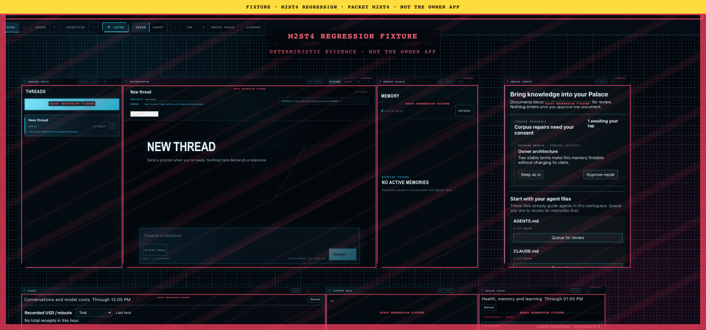
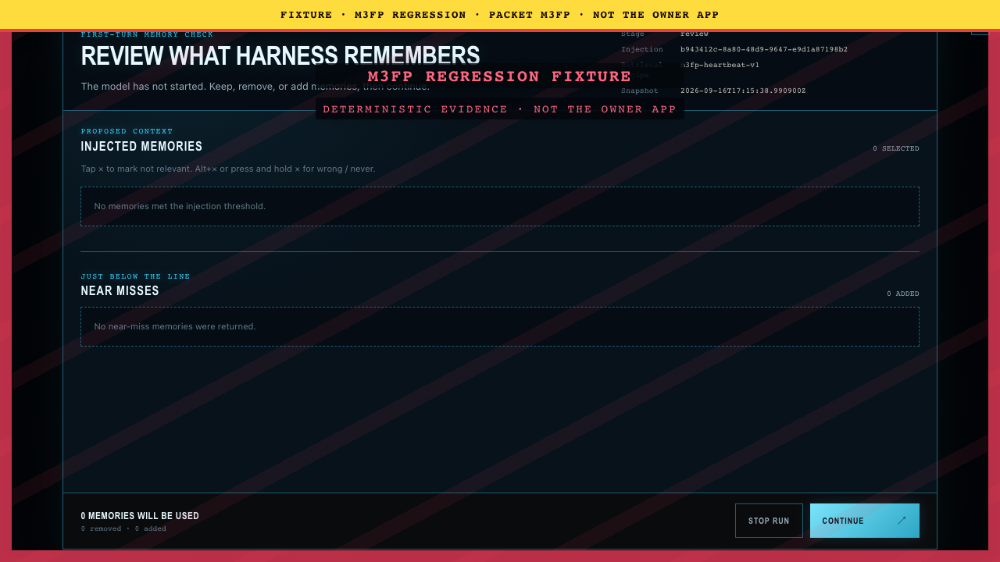
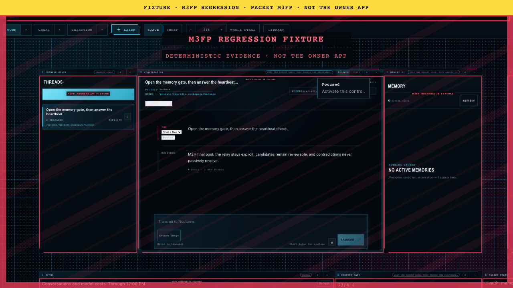
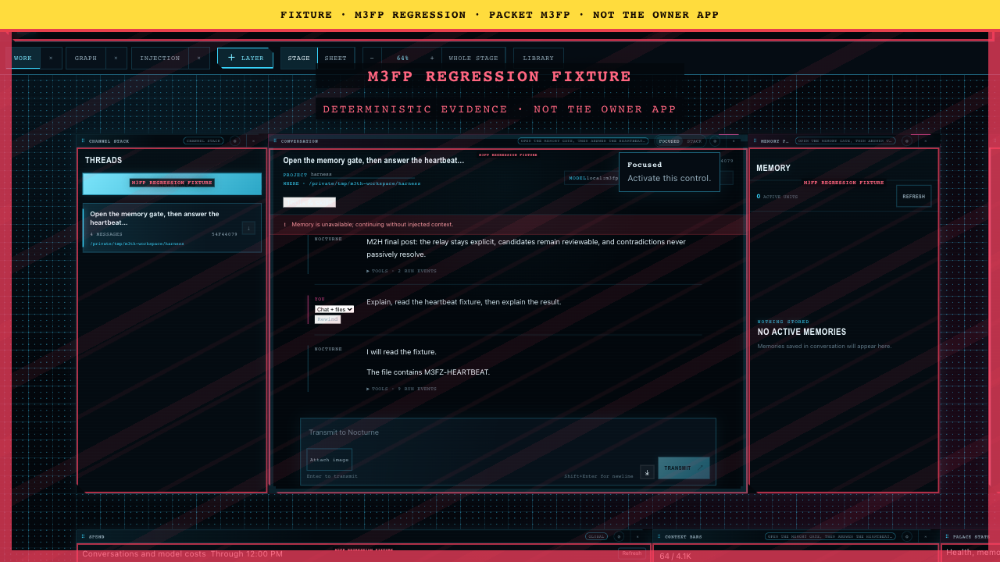

M3TH evidence review 13
canon/m2st4/sweep-v2/03-ultrawide-1920x900.png
canon/m3fp-heartbeat/packaged-heartbeat/01-first-prompt-gate.png
canon/m3fp-heartbeat/packaged-heartbeat/02-first-answer.png
canon/m3fp-heartbeat/packaged-heartbeat/03-talk-tool-talk.png